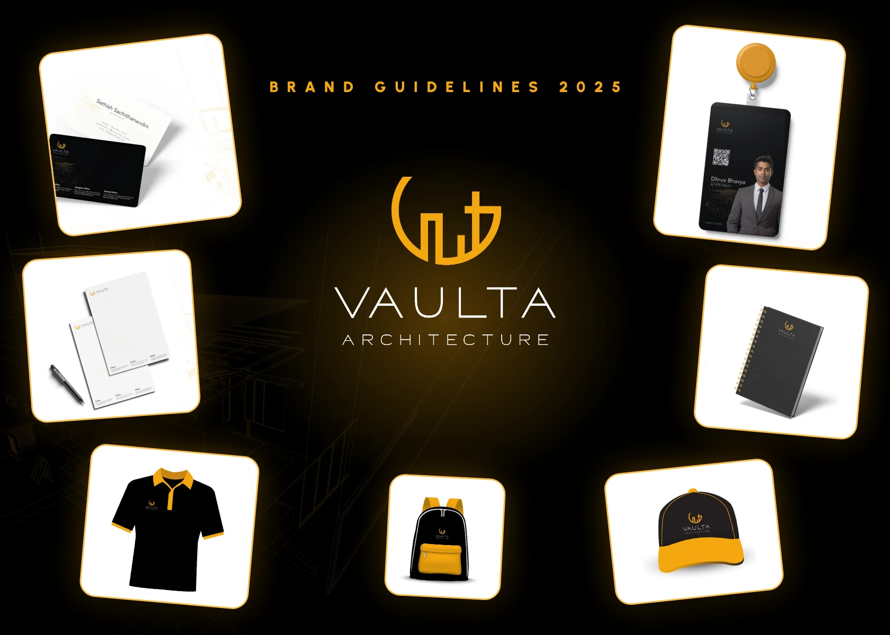
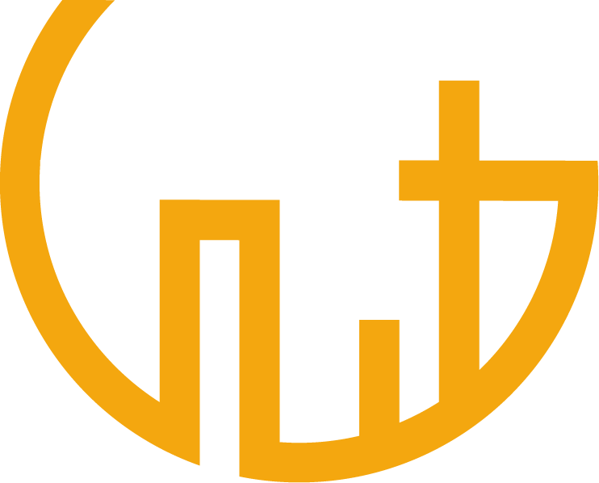
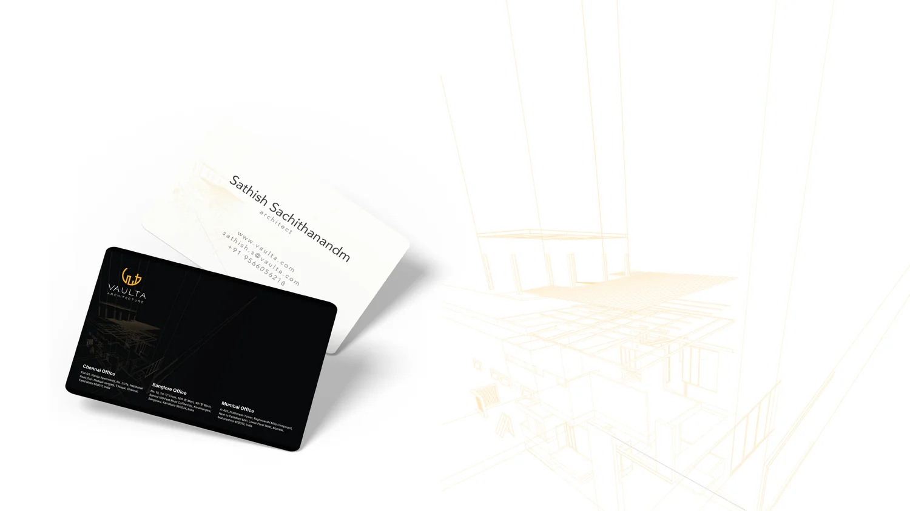
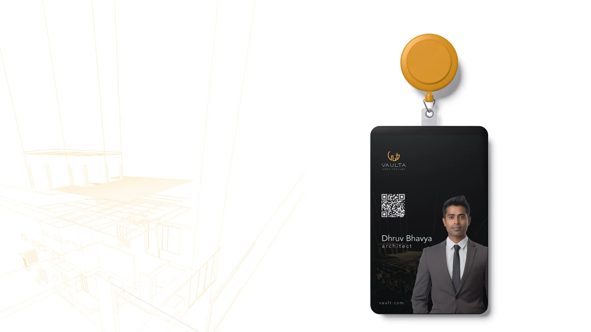
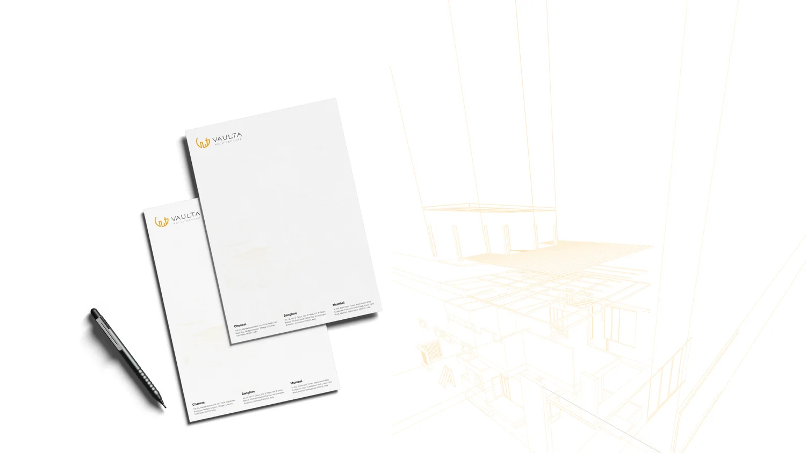
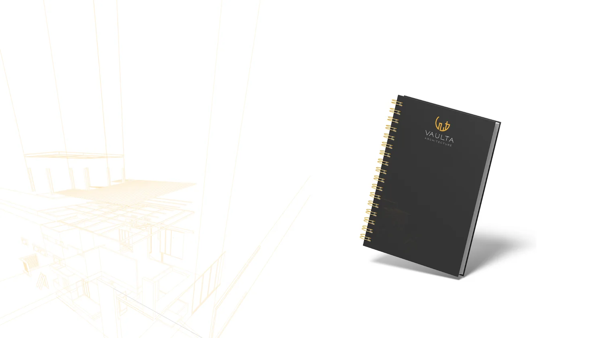
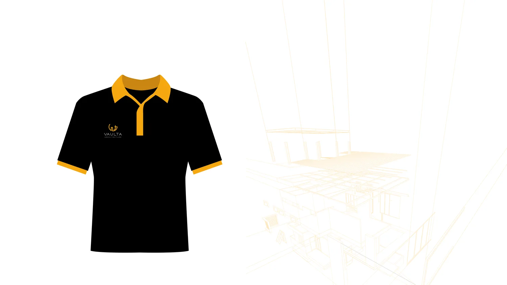
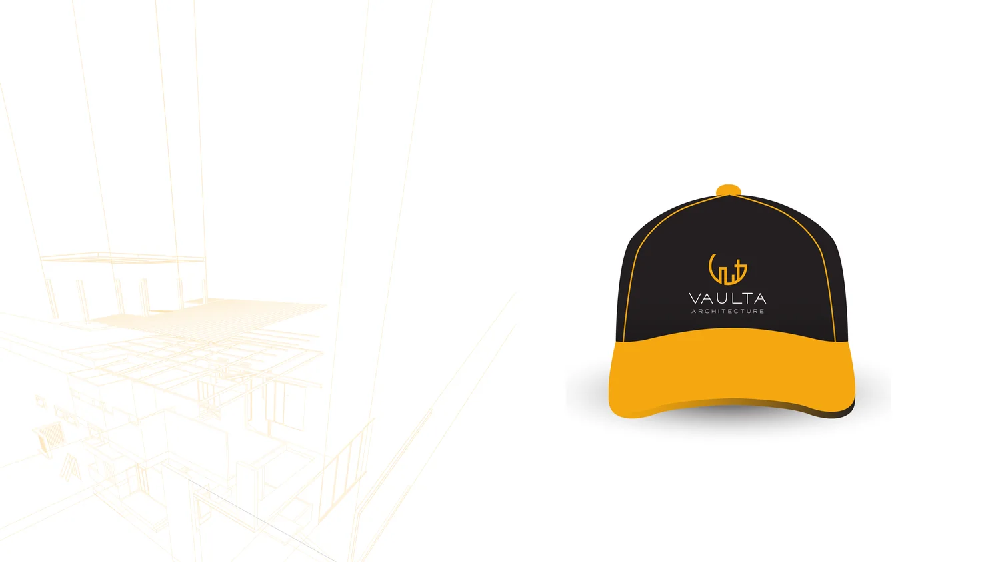
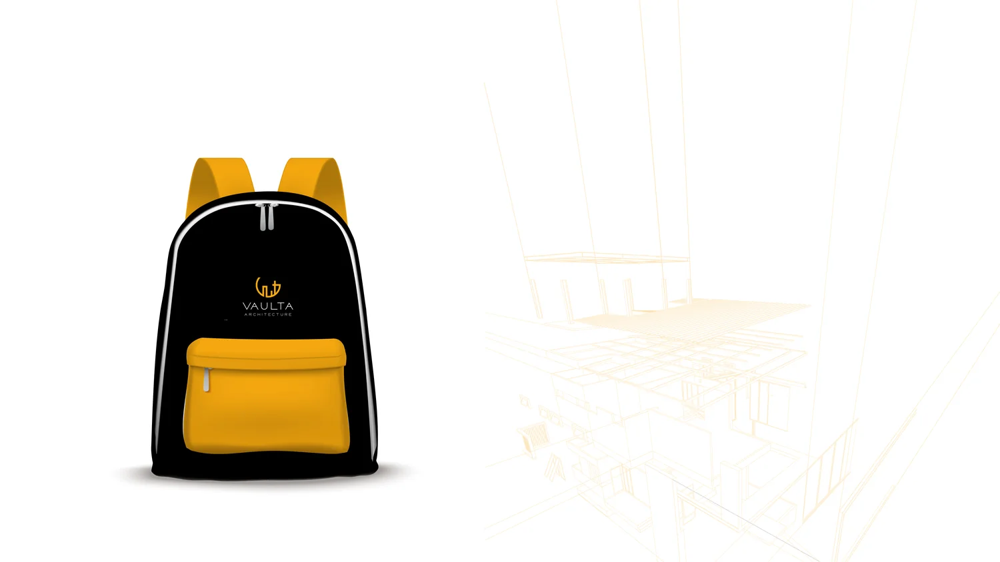

BRANDING | BRAND GUIDELINES 2025
VAULTA: a brand identity that reads like a skyline.
A logo, a set of guidelines and a stationery system for a modern architecture firm, built around one idea: merge the name into a symbolic cityscape while keeping it minimal.

THE CLIENT
A modern architecture firm that blends creativity with precision.
Vaulta is a modern architecture firm focused on innovative, sustainable, and aesthetic designs. They create functional spaces that blend creativity with precision.
The brief for the identity was to feel modern and sophisticated, and to connect directly to architecture.
THE LOGO CONCEPT
Merge the name into a skyline, and keep it minimal.
I wanted to create something that felt modern, sophisticated, and directly connected to architecture. My main idea was to merge the name "Vaulta" into a symbolic representation of buildings while keeping it minimal and unique.
I started by analyzing the word "Vaulta" and looking at how its letterforms could be manipulated into a visual element. To further enhance the architectural feel, I crafted the symbol to resemble a skyline, something that immediately connects to the industry.
The curved shape in the design subtly represents a vault, which is a strong structural element in architecture. The vertical and angular forms inside the curve mimic buildings, making the entire symbol look like a cityscape.

The symbol on its construction grid.

THE PRIMARY SYMBOL
One symbol, two versions.
The VAULTA symbol is the core visual element of the brand, appearing across all logo variations in full color, greyscale, and standalone formats.
It comes in two versions, one for dark backgrounds and one for light backgrounds, with a key difference on the right edge of the symbol.
LOCKUPS
A horizontal lockup for most work, a vertical one for tight spaces.
Horizontal lockup
The horizontal lockup is VAULTA's primary logo orientation, ensuring clarity, consistency, and versatility. It enhances readability, works well across digital and print media, and maintains a strong brand presence without occupying too much space.
Vertical lockup
The vertical lockup is an alternate logo orientation, ideal for stacked layouts and compact spaces. It maintains brand consistency, enhances visibility in square or tall formats, and ensures a strong, balanced presence across various applications.
GREYSCALE LOGOS
The identity holds up when color is limited.
All logo variations and the primary symbol are available in greyscale, ensuring versatility and adaptability across different applications.
The greyscale version preserves brand integrity when color reproduction is limited, maintaining clarity and consistency across all mediums.
SAFE ZONE
Give the logo room, measured by one letter.
To maintain the logo's clarity and prominence when used alongside other visual elements, it is essential to provide adequate space around it. This "safe zone" ensures that the logo remains distinct and easily recognizable, separate from other design components.
The safe zone is defined as an area equal to the height of the lowercase letter "a" in the logo, applied uniformly on all sides: top, bottom, left, and right. No other visual elements should encroach upon this space, ensuring the logo stands out clearly and maintains its integrity in any context.
COLOR PALETTE
Yellow for warmth, black for strength.
The yellow represents innovation and excellence, adding warmth and creativity. Black conveys strength and professionalism, reinforcing VAULTA's premium identity. Grey provides a neutral, modern balance for a sleek look, while white enhances clarity and ensures a clean, minimal aesthetic across all applications.
TYPOGRAPHY
Neon letterforms for a forward-thinking feel.
The VAULTA logo features neon typography, creating a modern, futuristic, and sophisticated visual identity. The glowing effect enhances visibility and uniqueness, making the brand feel innovative and dynamic.
This choice reflects architectural creativity, symbolizing bright ideas, precision, and a forward-thinking approach in design.
APPLICATIONS
The identity at work, from business cards to backpacks.
The system applied across everyday touchpoints: stationery, ID, notebook, apparel and bags.






